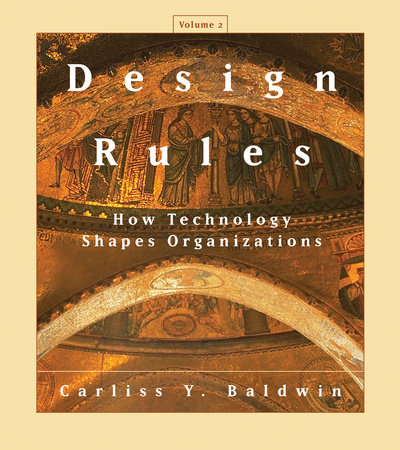

Design Rules, Volume 2: How Technology Shapes Organizations - Carliss Y. Baldwin
Why the future of organizations Is embedded in the architecture of technology

Review
In a world increasingly dominated by digital technologies, the traditional boundaries of organizations are being redrawn. Vertically integrated firms are giving way to globally distributed ecosystems. Software is being built by loosely affiliated communities rather than centralized R&D labs. And platform-based businesses like Apple, Amazon, and Google now dominate entire sectors. But what exactly is driving these structural shifts in how work is organized? What is the role of technology in shaping the form and function of modern organizations?
These are the questions at the heart of Design Rules, Volume 2: How Technology Shapes Organizations, the latest contribution by Harvard Business School professor Carliss Y. Baldwin. This volume is the long-anticipated sequel to Design Rules, Volume 1: The Power of Modularity (2000), co-authored with Kim B. Clark. Together, the Design Rules series represents one of the most ambitious efforts in the past two decades to build a unified theory of technology and organizational design.
Where Volume 1 introduced the foundational concept of modularity—the idea that complex technical systems can be broken into loosely coupled, well-defined components—Volume 2 builds on this to offer a much broader and more general framework. The new volume is not just about modularity, but about how technologies, by their very structure and dynamics, shape the organizations that implement them. It goes beyond software and hardware, offering a theory with implications for economics, management science, industrial organization, and systems engineering.
Baldwin’s central premise is simple but profound: the design of technology imposes both constraints and affordances on how organizations must be structured if they are to implement that technology efficiently and capture value from it. Organizations, in this view, are not just social or legal constructs—they are functional responses to the demands of the technologies they use.
Through theoretical innovation and in-depth case analysis, Baldwin argues that different technologies give rise to different forms of organization: from tightly controlled hierarchies to loose, distributed ecosystems and open-source communities. The key lies in understanding the complementarity relationships among the components of a technical system—whether they are so tightly interdependent that they require centralized control, or loosely connected enough to permit decentralized innovation.
Volume 2 is a sweeping, multidisciplinary work that synthesizes insights from organizational economics, evolutionary theory, systems engineering, and the history of technology. It is both conceptually rigorous and empirically grounded, offering a unique and powerful perspective on how the deep structure of technology influences the surface form of organizational life.
Key contributions
At the heart of Design Rules, Volume 2 lies an ambitious effort to explain how the structure of technology determines the structure of the organizations that use it. Carliss Baldwin lays out four key contributions that form the backbone of this sweeping theoretical and empirical work.
A general theory of technology and organization
First, Baldwin develops a general theory that places technology at the center of organizational design. She argues that technologies are not neutral tools—they come with material requirements and structural affordances that shape how organizations must be arranged in order to implement them effectively. Those organizations that align well with the constraints and opportunities presented by a given technology are more likely to survive, scale, and capture value in a competitive environment. This co-evolutionary view reframes technology as a driving force in the emergence, transformation, and demise of organizational forms.
The spectrum of complementarity
Second, Baldwin introduces the concept of the spectrum of complementarity, a powerful framework for understanding how the relationships between components of a technical system influence organizational choices. On one end of the spectrum are strong complements, where components must work together in tightly integrated ways. These favor centralized, hierarchical firms with unified governance. On the other end are weak complements, where components can be combined more flexibly and independently. These favor modular ecosystems, platform-based business models, and even open-source networks, where distributed governance, minimal hierarchy, and radical transparency can flourish. The degree of complementarity thus predicts the most efficient and sustainable form of organization for a given technology.
Value structure analysis
Third, the book introduces a novel method for visualizing and analyzing technical systems: value structure analysis. This approach maps the components of a system in terms of the tasks they perform and the value they contribute. By focusing on “thin crossing points”—interfaces between loosely coupled modules—Baldwin identifies where transaction costs are lowest and where opportunities for coordination, specialization, or platformization are greatest. This method is used throughout the book to analyze how systems create value, how that value can be captured (or lost), and how technical design decisions ripple outward into economic and organizational consequences.
Historical and contemporary case studies
Finally, Baldwin grounds her theory in a series of richly detailed case studies that span more than a century of industrial evolution. She traces the transition from the vertically integrated mass production firms of the early 20th century (like Ford and IBM) to the horizontally layered ecosystems of the digital age (such as Wintel, Dell, and Google). She explores the rise of open-source software and DevOps cultures as new organizational responses to the unique properties of software as a technology. And she examines the economic dynamics unleashed by Moore’s Law, showing how rapid technical change incentivized modular architectures and platform governance. These examples serve not just to illustrate the theory, but to demonstrate its explanatory power across a wide range of industries and technological domains.
Strengths and impact
One of the book’s greatest strengths is its theoretical originality. Baldwin brings together insights from engineering design, economics, organizational theory, and innovation studies to craft a truly interdisciplinary framework. Her use of concepts like value structure maps and the spectrum of complementarity is both novel and methodologically robust, offering readers tools to think more precisely about the relationship between technology and organizational form.
Equally impressive is the book’s empirical rigor. Each theoretical idea is grounded in detailed case studies spanning multiple industries and historical periods—from the rise of mass production in the early 20th century to the modern dominance of digital platforms and open-source ecosystems. Baldwin’s treatment of these examples is comprehensive, deeply researched, and intellectually generous, allowing the reader to see how abstract models play out in the real world.
Despite the complexity of its subject matter, the book maintains a remarkable degree of conceptual clarity. Technical ideas—such as design structure matrices (DSMs), modularity, or transaction cost placement—are illustrated through intuitive diagrams and historical analogies that make the material accessible even to those outside the academic core of the field. This clarity, combined with Baldwin’s forward-looking perspective, makes the book especially relevant for anyone trying to understand contemporary shifts in how value is created and captured in an era of rapid technological change.
Challenges and limitations
That said, Design Rules, Volume 2 is not a light read. It carries a high cognitive load, packed with formal reasoning, abstract models, and layered argumentation. Readers unfamiliar with the foundations of organizational theory or economic modeling may need to invest time and effort to fully absorb its arguments.
Additionally, while the book offers a powerful framework, its case studies and examples are primarily drawn from technology-intensive sectors, especially computing, electronics, and software. As such, the theory’s direct applicability to more traditional or service-based industries may require further adaptation. Finally, although the book stands alone as a major contribution, readers who have not engaged with Design Rules, Volume 1 may occasionally feel they are missing important conceptual background—especially regarding the original treatment of modularity.
Who should read this?
Design Rules, Volume 2 is ideally suited for researchers and graduate students in fields such as organizational theory, innovation management, and platform economics. It is also a valuable resource for technology strategists and digital transformation leaders seeking to align business strategy with technical architecture. Policy makers working on industrial policy and digital governance will find it useful in understanding the structural underpinnings of modern ecosystems. Finally, systems engineers and enterprise architects will benefit from its deep insights into the interplay between design decisions and organizational constraints.
Verdict
Design Rules, Volume 2 is a landmark work—ambitious in scope, rigorous in method, and deeply relevant to understanding the shifting terrain of technology and organization in the 21st century. Carliss Y. Baldwin does not merely build on the foundations laid in Volume 1; she expands the intellectual architecture to accommodate a more complex, dynamic world—one where platforms, ecosystems, and distributed forms of collaboration are rapidly supplanting the vertically integrated structures of the past.
What sets this book apart is not only its explanatory power but its unifying vision. Baldwin succeeds in weaving together disparate fields—economics, engineering, organizational design, strategy—into a coherent framework that makes sense of how technologies evolve and how they reshape the organizational landscape around them. Her concepts, particularly the spectrum of complementarity and value structure analysis, are not only insightful but immediately applicable. They offer a way of seeing and reasoning about organizations that transcends conventional business school wisdom.
This is not just a book for theorists. For practitioners—particularly those leading digital transformation efforts, architecting platform strategies, or navigating the rise of open-source and remote collaboration—Design Rules, Volume 2 offers a vocabulary and logic for understanding what works, what doesn’t, and why. It provides a strategic lens through which to evaluate not just individual decisions, but the overall coherence between an organization’s technological infrastructure and its structure, governance, and long-term viability.
That said, it is also a demanding book. Readers without prior exposure to Volume 1 or to the literature on modularity, platform strategy, or organizational economics may find the intellectual terrain challenging. But for those willing to invest the time, the intellectual return is substantial.
In the end, Design Rules, Volume 2 doesn’t just describe how technology shapes organizations—it shows us how to design organizations for a technological world. It will likely stand as a foundational reference for years to come, not only in academia but in boardrooms, design studios, and strategy workshops wherever technology meets enterprise.
Further readings
Core foundations:
Baldwin, C. Y. (2023). Design rules: Past and future. Industrial and Corporate Change, 32(1), 11–27. DOI
Baldwin, C. Y., & Clark, K. B. (2000). Design rules, volume 1: The power of modularity. MIT Press. Link
Simon, H. A. (1962). The architecture of complexity. Proceedings of the American Philosophical Society, 106(6), 467–482. Link
Organizational theory and economics:
Williamson, O. E. (1985). The economic institutions of capitalism: Firms, markets, relational contracting. Free Press. ISBN: 002934820X, 9780029348208
Milgrom, P., & Roberts, J. (1992). Economics, organization and management. Prentice Hall. ISBN: 9780132239677
Nelson, R. R., & Winter, S. G. (1982). An evolutionary theory of economic change. Harvard University Press. Link
Platforms and ecosystems:
Cusumano, M. A., Gawer, A., & Yoffie, D. B. (2019). The business of platforms: Strategy in the age of digital competition, innovation, and power. Harper Business. Link
Jacobides, M. G., Cennamo, C., & Gawer, A. (2018). Towards a theory of ecosystems. Strategic Management Journal, 39(8), 2255–2276. DOI
Software and Open Source
Info
SubjectTitle |
ContentDesign Rules, Volume 2: How Technology Shapes Organization |
|
| Year | 2024 | |
| Author | Carliss Y. Baldwin | |
| Publisher | The MIT Press | |
| Language | English | |
| Topics | Modularity, Organizational design, Technology strategy, Platform ecosystems, Value networks | |
| Downloads | PDF | CC BY-NC-ND 4.0 | |
| Other links | Publisher book page | |
| ISBN/DOI | 9780262380232 | |
| Buy online | MIT Press |